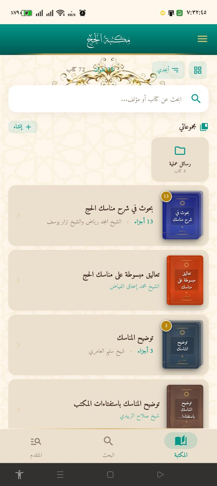
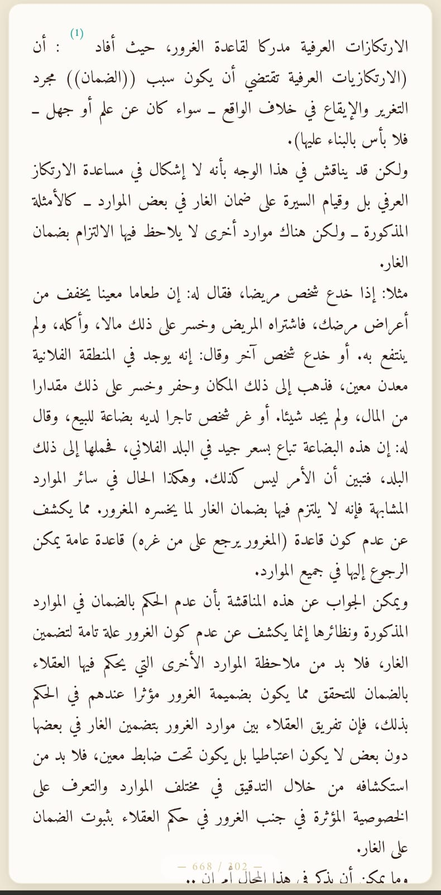
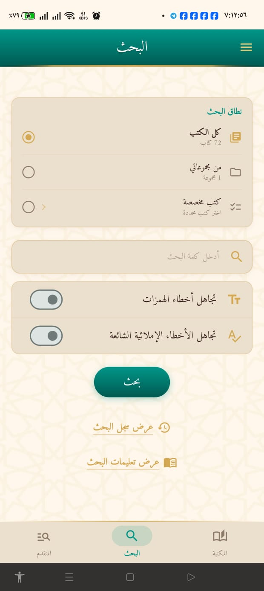
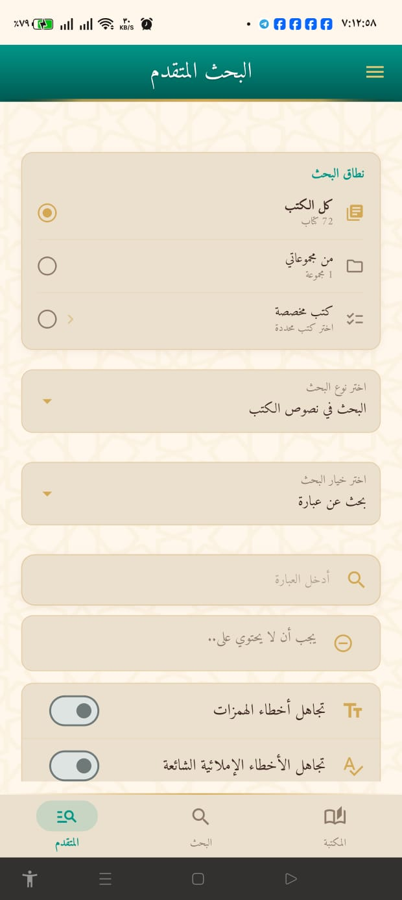
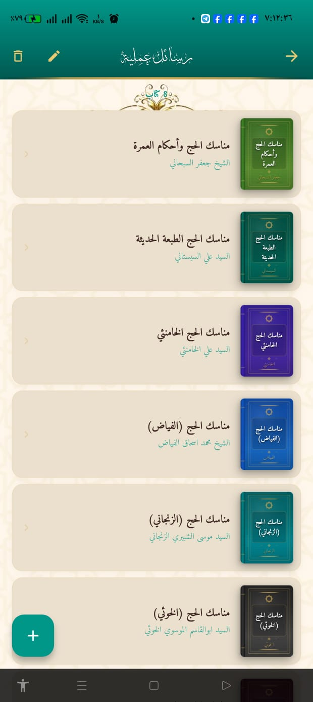

قارئ نصوص تراثية يعمل دون إنترنت بالكامل، بمحرّك بحث صرفي مبنيّ من الصفر وبحث دلالي بالـ embeddings عبر ONNX — منشور ومُصان على Google Play. A fully offline reader for heritage texts, with a from-scratch morphological search engine and ONNX-based semantic search — shipped and maintained on Google Play.
مكتبة الحج تطبيق قراءة علمية يعمل بالكامل دون اتصال. يشحن قاعدة بيانات SQLite مضغوطة (~35MB) وقاموساً لغوياً (~9.5MB)، ويتيح قراءة آلاف الصفحات التراثية مع أدوات قارئ متكاملة — كل ذلك بلا أي تتبّع أو إعلانات أو Firebase. Hajj Library is a scholarly reading app that works entirely offline. It ships a compressed SQLite database (~35MB) and a linguistic dictionary (~9.5MB), letting users read thousands of heritage pages with a full reader toolkit — with zero tracking, ads, or Firebase.
التحدّي الحقيقي ليس عرض النص، بل البحث بشكل صحيح: مطابقة الكلمات رغم اختلاف الهمزات والتاء المربوطة والألف المقصورة، وتوسعة الجذور إلى مشتقّاتها، وكلّ ذلك بسرعة فورية على الهاتف ودون خادم. بنيتُ لهذا خطّ معالجة صرفي من أربع مراحل، وأضفتُ في الإصدار 2.1 بحثاً دلالياً يدمج التشابه المتّجهي مع البحث النصّي. The real challenge isn't rendering text — it's searching correctly: matching words across hamza, tā' marbūṭa, and alef-maqsūra variants, expanding roots into their derivatives, all instantly on-device with no server. I built a four-stage morphological pipeline for this, and in v2.1 added semantic search that fuses vector similarity with lexical retrieval.
لقطات حقيقية من التطبيق على المتجرReal screenshots from the app's store listing





feature-first + طبقات نظيفة، مستودعات ثابتة (static) لتبسيط الـ isolates والاختبارFeature-first + clean layers, static repositories for isolate-safety and testing
// 14 ميزة مستقلة · feature-first lib/ ├─ main.dart init: settings → hydrate derivatives cache → maintenance ├─ core/ theme · arabic morphology utils · shared widgets └─ features/ ├─ books/ reader engine · TOC · page cache (10-page cap) ├─ search/ FTS5 + morphology orchestrator (16 files) │ └─ two-phase: fast (no derivatives) → if <50 hits → full morphology ├─ semantic_search/ ONNX embedder · vector index · rank fusion (v2.1) ├─ highlights · notes · bookmarks · collections · clippings ├─ reading_stats · reading_books · drawings └─ backup/ JSON export/import · AES · transactional rollback Search flow: input → SearchUtils → MatchQueryBuilder → SearchDb → 1000+ FTS rows → background isolate (score + snippet)
_dbVersion.Three-tier schema detection: auto-adapts to three database layouts (new pages + pages_fts, legacy FTS5, plain-SQLite fallback) without breaking, with version migration via a _dbVersion constant.تطبيع الهمزات، مطابقة المتشابهات (ة/ه، ى/ي، ض/ظ)، وتوسعة الجذور إلى المشتقّات عبر قاموس مدمج 9.5MB — مع ذاكرة LRU وكاش دائم لتفادي إعادة تحليل الكلمات.Hamza normalization, confusable matching (ة/ه, ى/ي, ض/ظ), and root→derivative expansion via an embedded 9.5MB dictionary — with LRU and persistent caching to avoid re-analyzing words.
دمج ONNX Runtime لتوليد embeddings (نموذج لغوي، مكمَّم int8)، مع دمج رُتب (rank fusion) بين التشابه المتّجهي وصلة FTS5 — وتراجع سلس إلى FTS فقط عند غياب النموذج.ONNX Runtime for embeddings (language model, int8-quantized), with rank fusion between vector similarity and FTS5 relevance — and graceful fallback to FTS-only when the model is unavailable.
قاعدة SQLite مضغوطة 35MB تُستخرَج وقت التشغيل، وضع WAL، تخزين مؤقّت للصفحات بسقف ذاكرة، حفظ موضع القراءة تلقائياً — بلا أي اعتماد على الشبكة.A 35MB compressed SQLite DB extracted at runtime, WAL mode, page caching with a memory cap, auto-saved reading position — with zero network dependency.
نسخ احتياطي بمعاملات قابلة للتراجع (rollback)، كتابة متسلسلة آمنة لـ SharedPreferences، قراءة JSON آمنة (المدخلات التالفة لا تُسقط التطبيق)، وتشفير AES اختياري.Transactional backup with rollback, serialized safe SharedPreferences writes, safe JSON deserialization (corrupt entries don't crash the app), and optional AES encryption.
تظليل بأربعة ألوان، ملاحظات بوسوم وتصدير Markdown، إشارات ملوّنة، طبقة رسم/تأشير، تمرير متّصل، نوافذ حواشٍ، 4 خطوط، وإحصاءات قراءة بأهداف يومية.Four-color highlights, tagged notes with Markdown export, colored bookmarks, a drawing layer, continuous scroll, footnote popups, 4 fonts, and reading stats with daily goals.
إعداد توقيع APK، سياسة خصوصية منشورة بمعرّف الحزمة، CI عبر GitHub Actions (تحليل + اختبار + بناء)، وتثبيت متعمّد لإصدارات SQLite لتفادي فشل البناء على الشبكات البطيئة.APK signing config, a published privacy policy matching the package ID, GitHub Actions CI (analyze + test + build), and deliberate SQLite version pinning to avoid build failures on slow networks.
| الإطارFramework | Flutter 3.x · Dart >=3.0 · Material Design· Material Design |
| إدارة الحالةState | Provider + مستودعات static+ static repositories |
| قاعدة البياناتDatabase | SQLite (sqflite_common_ffi · sqlite3_flutter_libs) · FTS5 · WAL |
| الذكاء الاصطناعيAI / ML | ONNX Runtime · embeddings مكمَّمة (int8) · rank fusion· quantized embeddings (int8) · rank fusion |
| المعالجة اللغويةLinguistics | خطّ صرف مخصّص · قاموس 9.5MB · 4 خطوط (Amiri · Cairo · Lateef · Thuluth)Custom morphology · 9.5MB dictionary · 4 fonts (Amiri · Cairo · Lateef · Thuluth) |
| التشفيرEncryption | crypto · encrypt (AES) للنسخ الاحتياطيfor backups |
| المنصّاتPlatforms | أندرويد (موقّع) · iOS · ويب · ويندوز · macOS · LinuxAndroid (signed) · iOS · Web · Windows · macOS · Linux |
| CI/CD | GitHub Actions (flutter analyze · test · build APK)(flutter analyze · test · build APK) |